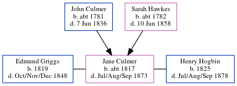

Jane Hogbin (née Culmer) c1817 - 1873
[ Home ] | [ Calendar ] | [ Surnames Index ] | [ Errors ] | [ Family History ]The child of John Culmer (a parish clerk) and Sarah Hawkes, Jane Culmer, the four times great-aunt of Nigel Horne, was born in Stourmouth, Kent, England c. 18171,2,3,4 and baptised there on 20 Jul 1817. She was married twice - to Edmund Griggs (in Oct 1839 in Stourmouth) Henry Hogbin (in 1849 in Eastry, Kent, England, following the death of Edmund in Oct/Nov/Dec 1848)5.
During her life, she was living at her birthplace in 18411, in 18612 (the same place as her mother had been living in 1841) and in 18713.
She died in Jul/Aug/Sep 1873 in Eastry4.
Parents
- John was born c. 1781
- Sarah Anne was born c. 1782
Citations
- 1841 England Census Online publication - Provo, UT, USA: The Generations Network, Inc., 2006.Original data - Census Returns of England and Wales, 1841. Kew, Surrey, England: The National Archives of the UK (TNA): Public Record Office (PRO), 1841. Data imaged from the National
- 1861 England Census Online publication - Provo, UT, USA: The Generations Network, Inc., 2005.Original data - Census Returns of England and Wales, 1861. Kew, Surrey, England: The National Archives of the UK (TNA): Public Record Office (PRO), 1861. Data imaged from the National
- 1871 England Census Online publication - Provo, UT, USA: The Generations Network, Inc., 2004.Original data - Census Returns of England and Wales, 1871. Kew, Surrey, England: The National Archives of the UK (TNA): Public Record Office (PRO), 1871. Data imaged from the National
- England & Wales, FreeBMD Death Index: 1837-1915 Online publication - Provo, UT, USA: The Generations Network, Inc., 2006.Original data - General Register Office. England and Wales Civil Registration Indexes. London, England: General Register Office. © Crown copyright. Published by permission of the Cont
- England & Wales, FreeBMD Marriage Index: 1837-1915 Online publication - Provo, UT, USA: The Generations Network, Inc., 2006.Original data - General Register Office. England and Wales Civil Registration Indexes. London, England: General Register Office. © Crown copyright. Published by permission of the Cont
Family Tree
Map
Generated by ged2site. Last updated on Jul 3, 2024
Known Issues
May have been living with mother on 1841, but the addresses don't match or aren't detailed enough to be sure
Census information missing between 1841 England Census and 1861 England Census